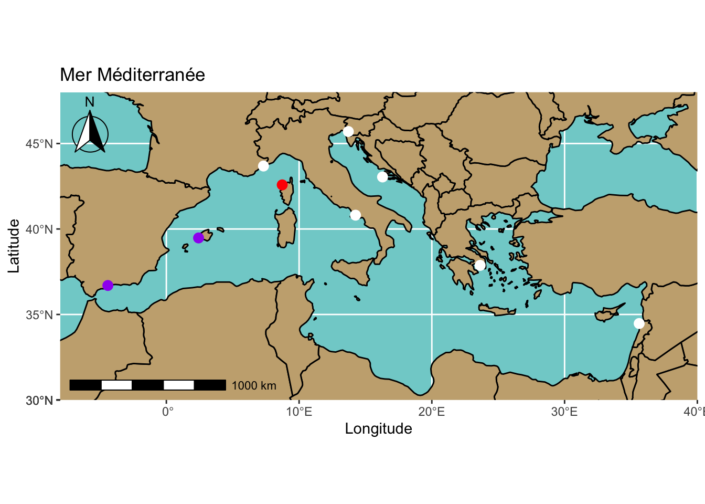
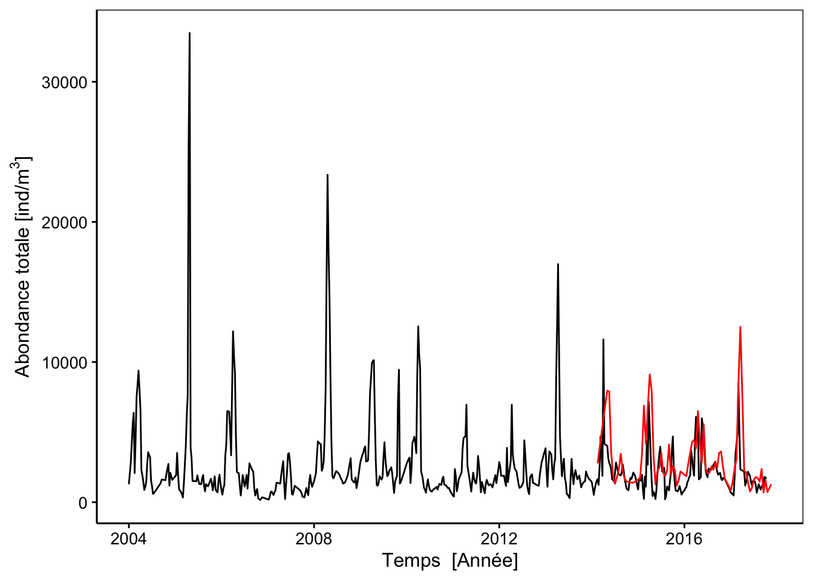

Comparaison de l’échantillonnage horizontal et vertical dans la série spatio-temporelle du plancton de Corse (France) avec ZooImage
Authors
Affiliations
Guyliann Engels
Service d’Écologie Numérique, Institut COMPLEXYS et Infortech, Université de Mons (UMONS)
Remy Dugauquier
Service d’Écologie Numérique, Institut COMPLEXYS, Université de Mons (UMONS)
Thomas Quivy
Service d’Écologie Numérique, Institut COMPLEXYS, Université de Mons (UMONS)
Lovina Fullgrabe
Service d’Écologie Numérique, Institut COMPLEXYS, Université de Mons (UMONS)
Station de Recherches Sous-marines et Océanographique, STARESO
Sylvie Gobert
Laboratoire d’Océanographie, FOCUS, Université de Liège
Station de Recherches Sous-marines et Océanographique, STARESO
Pierre Lejeune
Station de Recherches Sous-marines et Océanographique, STARESO
Michèle Leduc
Station de Recherches Sous-marines et Océanographique, STARESO
Pierre Boissery
Agence de l’Eau Rhône-Médterrané-Corse, Délégation de Marseille
Philippe Grosjean
Service d’Écologie Numérique, Institut COMPLEXYS, Université de Mons (UMONS)
Abstract (max 100 mots)
Le plancton est composé entre autres des méduses, des larves de poissons ou encore de copépodes. Les organismes planctoniques sont à la base de nombreuses chaines alimentaires marines. Les étudier est par conséquent d’une importance capitale aussi bien du point de vue écologique qu’économique. On compte neuf sites où les prélèvements sont réguliers et sur plus de dix ans en Mer Méditerranée. Différentes méthodes d’échantillonnage sont employées dont la plus utilisée est le trait de filet (vertical, horizontal, double oblique). La comparaison entre ces méthodes est un point essentiel dans la compréhension globale du plancton en mer Méditerranée.
Les organismes planctoniques se définissent par l’incapacité de lutter contre le courant. On retrouve parmi ces organismes les méduses, les larves de poissons ou encore le krill. Ces organismes sont à la base de nombreuses chaines alimentaires. L’étude de la diversité, l’abondance ou encore de la biomasse du plancton et de leurs variations au cours du temps est indispensable dans la compréhension des écosystèmes.
Le plancton est échantillonné principalement par des traits de filets. Chaque prélèvement permet la collecte de plusieurs centaines à milliers d’organismes. La classification des échantillons numérisés est réalisée de manière semi-automatisée. Un set d’apprentissage est réalisé par des spécialistes du plancton. Un modèle de machine learning entrainé avec ce set. Il est utilisé pour classer les organismes planctoniques de manière automatique dans le logiciel ZooImage (Philippe and Kevin 2014). L’expérimentateur valide ensuite ce classement.
Code
library("sf")library("rnaturalearth")library("rnaturalearthdata")library("ggspatial")world <-ne_countries(scale ="medium", returnclass ="sf")#class(world)station <-read(here::here("data/station_medit.csv")) %>.%mutate(., latitude =as.numeric(latitude), longitude =as.numeric(longitude))station_v <-filter(station, trait =="vertical")station_hv <-filter(station, trait =="horizontal-vertical")station_do <-filter(station, trait =="Double oblique")ggplot(data = world) +geom_sf(color ="black", fill ="#C8AD7F") +coord_sf(xlim =c(-8, 40), ylim =c(30, 48), expand =FALSE) +xlab("Longitude") +ylab("Latitude") +ggtitle("Mer Méditerranée") +theme(panel.background =element_rect(fill="#80D0D0")) +annotation_north_arrow(location ="bl", which_north ="true",pad_x =unit(0, "in"), pad_y =unit(2.4, "in"),style = north_arrow_fancy_orienteering) +annotation_scale(location ="bl") +annotate(geom ="point", x = station_v$longitude, y = station_v$latitude, size =3, color ="white") +annotate(geom ="point", x = station_hv$longitude, y = station_hv$latitude, size =3, color ="red") +annotate(geom ="point", x = station_do$longitude, y = station_do$latitude, size =3, color ="purple")

En Méditerranée, on dénombre neuf séries temporelles étudiées sur plus de 10 ans. La majorité des suivis sont effectués via des traits de filets verticaux (points jaunes). En Espagne, il a été décidé de réaliser des traits de filets en double oblique (points mauves). La station de recherche de Calvi (Corse, France) a réalisé un suivi via des traits horizontaux et a débuté des prélèvements verticaux depuis 2014 (point rouge).
Code
tsh <-read(here::here("data/ts_horiz_abd_tot.rds"))tsv <-read(here::here("data/ts_verti_abd_tot.rds"))chart(data = tsh, abd_tot ~ time) +geom_line() +geom_line(data = tsv, color ="red") +ylab(expression(paste("Abondance totale [ind/", m^{3}, "]")))

Pour les données de Calvi, la tendance globale entre la série obtenue via les traits horizontaux (en noir) (Fullgrabe et al. 2020) et les traits verticaux (en rouge) est similaire pour l’abondance totale. Cette série depuis 2014 offre l’opportunité de réalisé une comparaison plus détaillée entre échantillonnage vertical et horizontal.
On dénombre 335 échantillons horizontaux et 76 verticaux dans la série de Calvi. En appliquant une fenêtre de tolérance de 2 jours entre les échantillons, 30 paires de prélèvements ont été retenus. Malgré une tendance globale similaire, la comparaison plus détaillées au niveau de groupes d’intérêt met en avant des différences.
La sous-classe des Phaeodaria (chromiste) et la famille des Fritillariidea (tunicier) sont plus abondantes dans les traits de filets verticaux alors que l’ordre des Decapoda (crustacé) et l’ordre des Cladocera (crustacé) sont plus abondants dans les traits horizontaux.
Perspectives
La comparaison par paires de prélèvements réduit trop fortement le nombre de données. La prochaine étape de cette étude est de proposer une comparaison avec les deux séries temporelles directement afin d’utiliser l’ensemble de l’information disponible.
Cette comparaison va permettre de faire le lien entre les traits verticaux et les traits horizontaux. L’objectif est de déterminer à quel point la série horizontale long terme de Calvi est comparable aux autres séries.
Remerciements
Ceci est une contribution au projet STAtion of Reference and rEsearch on Change of local and global Anthropogenic Pressures on Mediterrannean Ecosystems Drifts (STARECAPMED). L’institut COMPLEXYS de l’Université de MONS (UMONS) a co-financé ce travail.
References
Fullgrabe, Lovina, Philippe Grosjean, Sylvie Gobert, Pierre Lejeune, Michèle Leduc, Guyliann Engels, Patrick Dauby, Pierre Boissery, and Jonathan Richir. 2020. “Zooplankton Dynamics in a Changing Environment: A 13-Year Survey in the Northwestern Mediterranean Sea.”Marine Environmental Research 159 (July): 104962. https://doi.org/10.1016/j.marenvres.2020.104962.
Philippe, Grosjean, and Denis Kevin. 2014. “Supervised Classification of Images, Applied to Plankton Samples Using R and Zooimage.” In, 331–65. Elsevier. https://doi.org/10.1016/B978-0-12-411511-8.00013-X.